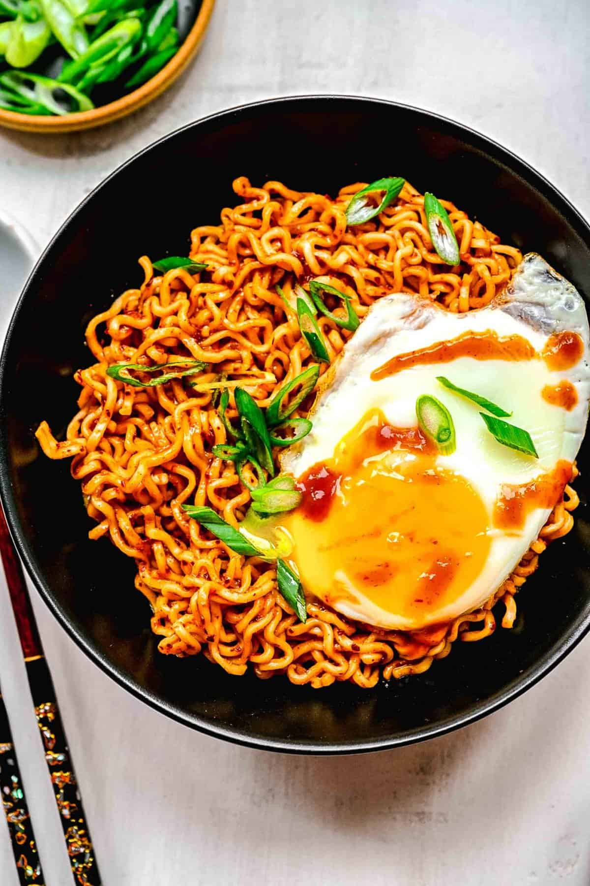

Spicy Noodles

A Bowel of Spicy Noodles with an egg in it.
This is a confort recipe of mine. Spicy Noodles are made with the Buldak Ramen.
The flavor used in the recipe is the Carbonara flavor.
This recipe will incorperate the directions on the back of the back of the buldak package
as well as specific directions.
Ingrediants
- 2 pack of Buldak Noodles Carbonara
- 2 eggs
- Half a stick of butter
- tablespoon of salt
- tablespoon of pepper
- First grab a pot a fill about half way with water
- Next place the pot on the stove and turn the stove to medium to high heat
- Open both packets of noodles and place them in the pot
- Allow the noodles to bowl til glossy